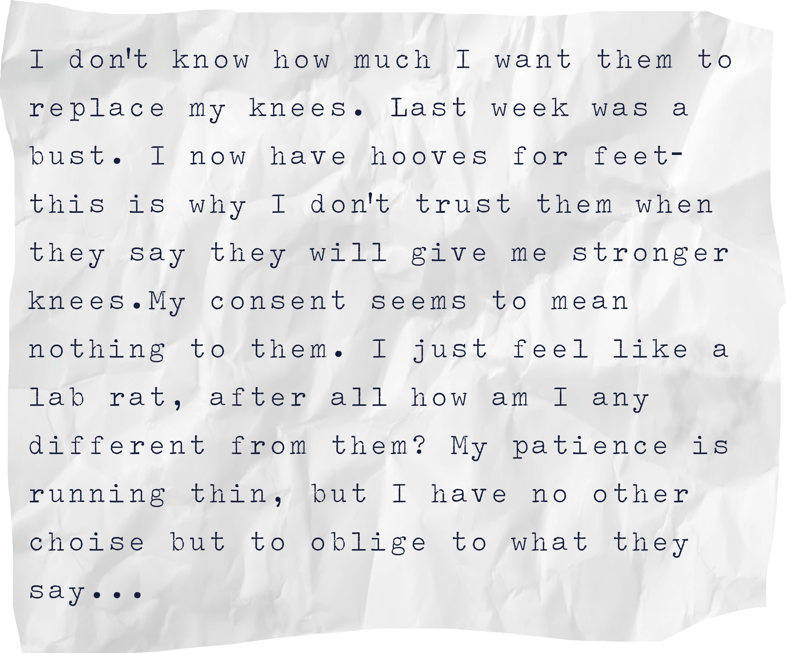
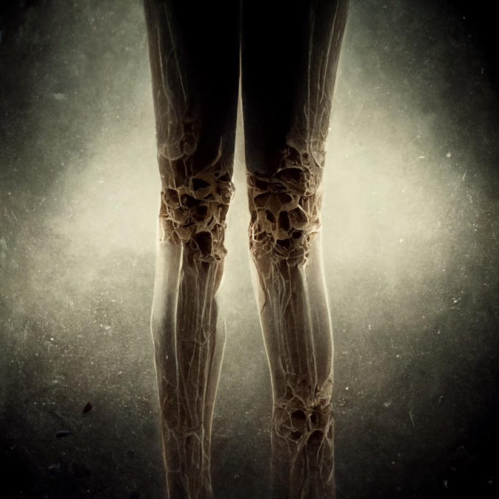

Case 2: knees | tibiofemoral joint
//attached: Note from Lester
ANALYSIS
+ KNEES: INTACT = READY FOR TRANSFORMATION
+ person's mental state beginning to worsen: heightened sense of fight or flight.
+ lack of cooperation.
+ circumstance: previous transformation failed.
STATUS OF EXPERIMENT:
INCOMPLETE
Transformation halted
cause: Interruption by patient
//attached: final image of KNEE transformation procedure
tune in next week to hear back from Lester